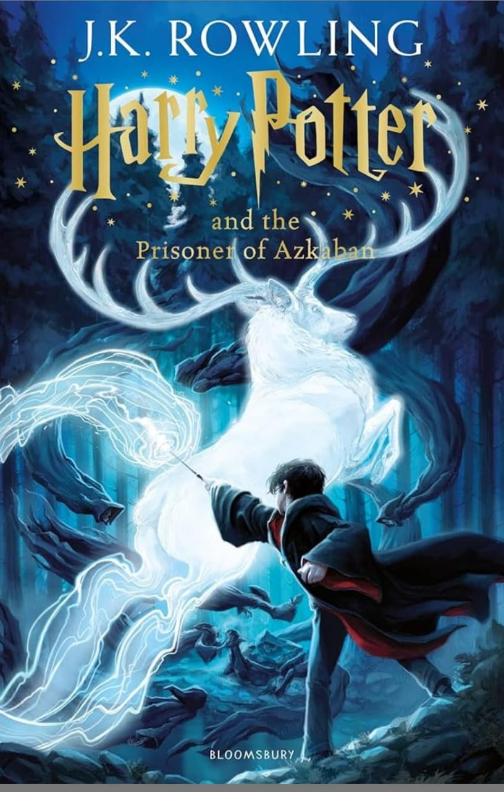

📖 Title: Harry Potter and the Prisoner of Azkaban

🖋️ Author: J.K. Rowling
📅 Published: 1999
📚 Genre: Fantasy, Mystery, Coming-of-Age
🧵 Plot Summary (Deep Dive):
The story begins with Harry Potter once again stuck with the Dursleys during the summer. After accidentally inflating his Aunt Marge in anger, he runs away, expecting punishment. Instead, he is picked up by the Knight Bus and delivered safely to the Leaky Cauldron, where he’s told he's not in trouble — but he's being watched closely.
Why? Because Sirius Black, a dangerous prisoner, has escaped from the feared prison Azkaban — and he’s supposedly after Harry.
As Harry begins his third year at Hogwarts, the atmosphere is noticeably darker. The school is under protection from soul-sucking guards called Dementors, who affect Harry more than most. These creatures symbolize depression and fear and become key emotional elements in the story.
Harry, Ron, and Hermione are navigating more complex subjects (like Divination, Care of Magical Creatures, and Time) and their friendship is tested as Hermione secretly adopts Buckbeak, a misunderstood hippogriff, and works on a mysterious project.
The mystery deepens:
Sirius Black is revealed to have betrayed Harry’s parents, leading to their murder by Voldemort.
Harry discovers he has inherited his father's Cloak of Invisibility and now, through others, begins to truly understand his parents' past.
A new Defense Against the Dark Arts teacher, Professor Lupin, becomes a father figure to Harry — kind, insightful, and hiding a dark secret: he is a werewolf.
Tension rises when Ron's pet rat Scabbers goes missing, supposedly eaten by Hermione’s cat, Crookshanks.
The twist unfolds when Sirius captures Ron and drags him into the Shrieking Shack. Instead of attacking, he explains that Peter Pettigrew, not him, betrayed the Potters — and Scabbers is Pettigrew in disguise.
Lupin and Sirius reunite, revealing their deep connection to Harry’s father. Harry has a chance to kill Pettigrew, but chooses mercy, showing maturity beyond his years.
However, due to a twist of fate (and Pettigrew escaping), Sirius is not cleared, and the Ministry still sees him as a criminal.
In the end, Hermione’s Time-Turner lets her and Harry go back in time to rescue Buckbeak and Sirius, setting up one of the most satisfying and intelligent time-travel sequences in modern fantasy.
🧠 Themes and Analysis:
1. Justice vs. Injustice
The book deeply questions the fairness of legal and magical systems. Sirius Black is imprisoned without trial. Lupin faces discrimination for being a werewolf. The Ministry is shown to be biased and inefficient.
2. Fear and Inner Strength
Harry's struggle with Dementors symbolizes how trauma and fear can paralyze. Learning the Patronus Charm is symbolic of harnessing inner light to drive away darkness.
3. Identity and Transformation
Many characters lead double lives:
Lupin hides being a werewolf.
Sirius is thought to be a killer but is a wrongly accused godfather.
Pettigrew hides as a rat for years.
This reflects the book’s exploration of truth behind appearances.
4. Time and Consequences
The use of the Time-Turner introduces the idea of time as a tool, but also a responsibility. The past cannot always be changed — only understood and carefully acted upon.
🧩 Character Development:
>Harry Potter: Grows significantly. Faces his parents’ death head-on and chooses mercy over revenge. Learns more about himself and his father's past.
Hermione Granger: Shows resilience, academic brilliance, and depth. Her use of the Time-Turner proves her extraordinary dedication and intelligence.
Ron Weasley: Loyal but begins to express deeper emotions and protectiveness, especially toward Hermione.
Sirius Black: Introduced as an apparent villain, but revealed as a tragic, complex, and deeply loyal godfather.
Remus Lupin: One of the most beloved characters in the series. Gentle, wise, and flawed — a human face to monstrosity (werewolf metaphor).
🧪 Symbolism:
Dementors: Represent depression, fear, and trauma. The fact that Harry is most affected reflects his emotional scars.
The Patronus: Symbolizes hope, self-protection, and personal strength.
The Marauder’s Map: A magical object created by Harry’s father and his friends. Represents the bonds of the past and the idea that troublemakers can be heroes.
Animagi: The ability to transform into animals symbolizes both freedom and deception.
✍️ Writing Style and Tone:
Rowling’s narrative matures with her characters. The language becomes more introspective, the emotional themes deeper. The mystery plot is extremely well-paced, and the twist (that Sirius is innocent and Pettigrew is alive) is clever, surprising, and beautifully foreshadowed.
Unlike Book 2, which focused on external danger, Book 3 is more psychological, emphasizing memory, loss, identity, and morality.
⭐ Final Verdict:
"Harry Potter and the Prisoner of Azkaban" is a fan-favorite for good reason. It introduces Sirius and Lupin, dives into the past of Harry’s parents, and challenges black-and-white ideas of good and evil. The book's deeper emotional tones and themes of redemption, justice, and hope make it one of the most powerful entries in the series.
✅ Rating: ★★★★★ (5/5)
Best mystery and plot twist
Emotional depth and growth
Exceptional character introductions
Smart use of time-travel
Rich symbolism and darker tone